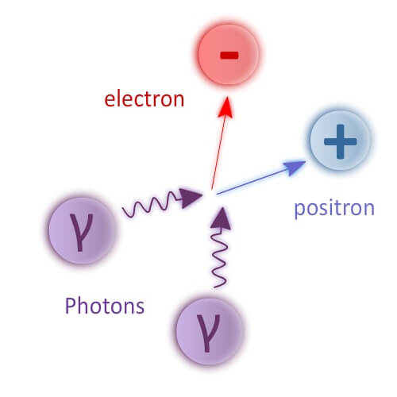

သိပ္ပံ ပညာရှင် တွေက အလင်းကနေ ဒြပ်ထု အဖြစ် ပြောင်းလဲ နိုင်လိမ့်မယ်လို့ ၁၉၃၀ ခုနှစ်လောက် ကတဲက တွက်ချက်ပြီး အဆိုပြု တင်ပြခဲ့ ကြတာ ဖြစ်ပါတယ်။ ဒါပေမယ့် အခုအချိန် စမ်းသပ်မှု မတိုင်မီ အထိ ဘယ် သုတေသန အဖွဲ့ကမှ အလင်းကနေ ဒြပ်ထု အဖြစ် တိုက်ရိုက် အောင်အောင် မြင်မြင် ပြောင်းလဲနိုင်စွမ်း မရှိခဲ့ ပါဘူး။
အခု စမ်းသပ်မှုမှာ အလွန် အားကောင်းတဲ့ particle accelerator ကြီးကို အသုံးချပြီး photon ခေါ်တဲ့ အလင်းမှုန် တွေကို တစ်ခုနဲ့ တစ်ခု ပွတ်တိုက်မိအောင် ပြုလုပ်ပြီး ဒြပ်ထု အဖြစ် ဖန်တီးတာ ဖြစ်ပါတယ်။
ဒီ စမ်သပ်မှုမှာ ပညာရှင် တွေက ရွှေ အက်တမ် တွေကို လျှပ်စစ် ဓါတ်ဆောင်တဲ့ အိုင်းယွန်း (gold ion) အမှုန် ဖြစ်အောင် အရင် လုပ်လိုက် ပါတယ်။ ဒီ ရွှေ အိုင်းယွန်း မှုန်တွေကို ဆန့်ကျင်ဖက် အရပ် နှစ်ဖက်ကနေ အလင်းလျှင် နီးပါး မြန်တဲ့ အလျင်နဲ့ ပစ်လွှတ်လိုက် ပါတယ်။
ဒီလို အလင်းလျင် နီးပါး အလျင်နဲ့ သွားနေတဲ့ ရွှေ အိုင်းယွန်း တွေရဲ့ ပတ်ခြာလည်မှာ အရောင်တောက်လာပါတယ်။ တနည်းအားဖြင့် အလင်း ဖိုတွန်တွေ ထွက်လာတာပါ။
ဒီ အလင်းဖိုတွန် တွေဟာ ရွှေ အိုင်းယွန်း မှုန်တွေ တစ်ခုနဲ့ တစ်ခု အနီးကပ် ဖြတ်သွားတဲ့ အခါ အချင်းချင်း ပွတ်တိုက်မိ ကြပါတယ်။ ဒီလို အလင်း ဖိုတွန် အမှုန်တွေ ပွတ်တိုက်ရာက အီလက်ထရွန် တွေနဲ့ ပိုစီထရွန်တွေ ထွက်လာကြ တာကို ရှာဖွေ တွေ့ရှိ ခဲ့ကြပါတယ်။

ဒါပေမယ့် ဒီ သီအိုရီ ကို လက်တွေ့ သက်သေ ပြဖို့ ဆိုတာက ထင်သလောက် မလွယ်ကူ ပါဘူး။ အထူးသဖြင့် အလင်း ဖိုတွန်တွေကနေ ဒြပ်ထု အဖြစ် ပြောင်းလဲဖို့ ဆိုတာက အတော်ကို မလွယ်တဲ့ ကိစ္စ တစ်ခု ဖြစ်ပါတယ်။ အခု လက်ရှိ အားအကောင်းဆုံး ဆိုတဲ့ လေဆာ ရောင်ခြည် ကိရိယာ တွေတောင်မှ အလင်းကနေ ဒြပ်ထုအဖြစ် ပြောင်းလဲ ပေးနိုင်ခြင်း မရှိသေးပါဘူး။
ဒါပေမယ့် အခု စမ်းသပ်မှုကို ပြုလုပ်ခဲ့တဲ့ Relativistic Heavy Ion Collider (RHIC) ကြီးထဲမှာ အလင်း ဖိုတွန် တွေကနေ ဒြပ်ထု ရှိတဲ့ အီလက်ထရွန် နဲ့ ပိုစစ်ထရွန် အမှုန်တွေ ထွက်လာတယ် ဆိုတာကို သက်သေ ပြ နိုင်ပြီ ဖြစ်ပါတယ်။ ဒီဖြစ်စဉ်မှာ တိုင်းထွာ ရရှိခဲ့တဲ့ အချက်အလက်တွေကို အသေးစိတ် စစ်ဆေး မှုတွေ အရလဲ ဒီ ထွက်လာတဲ့ အမှုန်တွေဟာ တကယ့် အလင်းဖိုတွန် စစ်စစ် တွေကနေ ထွက်လာတာ ဖြစ်တယ် ဆိုတာကို အတိအကျ သက်သေ ပြနိုင် ခဲ့ပါတယ်။
အခုလို အလင်းကနေ ဒြပ်အဖြစ် ပြောင်းနိုင်မယ် ဆိုတာကို ၁၉၃၄ ခုနှစ်မှာ ရူပဗေဒ ပညာရှင်တွေ ဖြစ်တဲ့ ဂရီဂေါ်ရီ ဘရိတ် (Gregory Breit) နဲ့ ဂျွန် ဝှီးလား (John Wheeler) တို့က ကြိုတင် ဟောကိန်း ထုတ်ခဲ့တာ ဖြစ်ပါတယ်။
သူတို့ရဲ့ တွက်ချက်မှု အရ ဖိုတွန် တွေ အချင်းချင်း အရှိန်ပြင်းပြင်းနဲ့ တိုက်မိရင် ဒြပ် (matter) နဲ့ ဆန့်ကျင်ဒြပ် (antimatter) တွေ ထွက်လာကြမယ် လို့ ဆိုပါတယ်။ သူတို့က သတ္တု အိုင်းယွန်း တွေကို အရှိန်ပြင်းပြင်းနဲ့ ပစ်လွှတ်ပြီး တိုက်ကြည့်ဖို့ အဆိုပြုခဲ့ ကြပါသေးတယ်။
အခု Relativistic Heavy Ion Collider (RHIC) ကြီးထဲမှာ ရွှေ အိုင်းယွန်း တွေကို အရှိန်ပြင်းပြင်းနဲ့ ပစ်ပြီး စမ်းတဲ့ အခါ အိုင်းယွန်းတွေ အချင်းချင်း တိုက်မိခြင်း မရှိပဲ ကပ်ပြီး ပွတ်ရုံ ပွတ် သပ်သွားတဲ့ ဖြစ်စဉ်တွေကိုပဲ သီးသန့် တိုင်းထွာတာ ဖြစ်ပါတယ်။
အခု သုတေသန အရ ဒီ ပညာရှင်တွေ ဟောကိန်းထုတ် ခဲ့တဲ့ သီအိုရီ မှန်ကန်မှု ရှိကြောင်း သက်သေ ပြနိုင်ပြီ ဖြစ်ပါတယ်။ အခု သုတေသနကို အမေရိကန် အစိုးရ စွမ်းအင် ဝန်ကြီးဌာနက ငွေကြေး ထောက်ပံ့မှုနဲ့ ပြုလုပ်ခဲ့တာ ဖြစ်တယ်လို့ သိရပါတယ်။
Reference: Making Matter from Collisions of Light | Office of Science